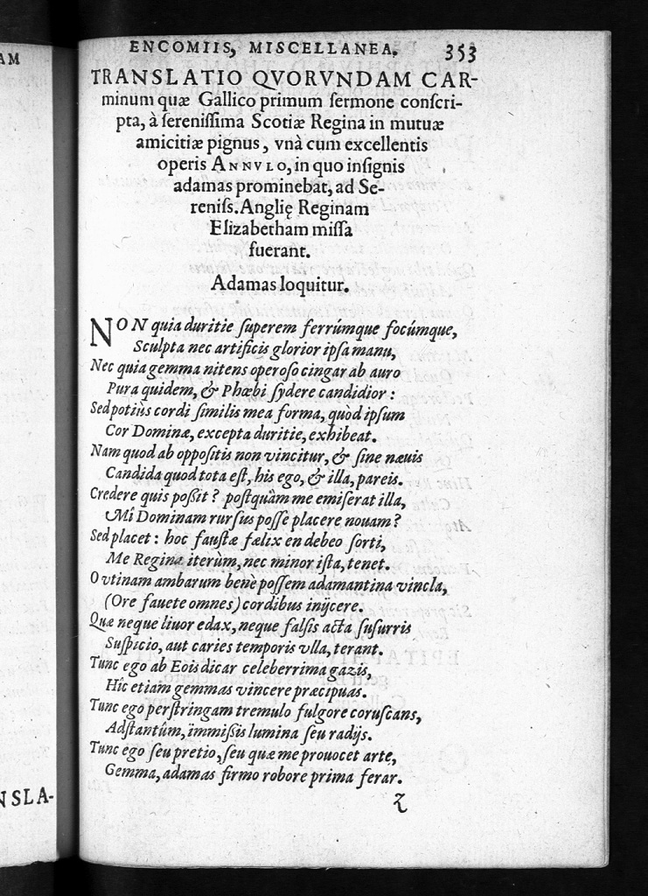

Select versions to display:
Image
Transcription
Translation
| Images | Transcription | Translation |
|---|---|---|
|  |
Translatio Qvorvndam Car-
minum quæ Gallico primum sermone conscri- pta, à serenissima Scotiae Regina in mutuae amicitiæ pignus, vnà cum excellentis operis Annvlo, in quo insignis adamas prominebat, ad Se- reniss. Anglię Reginam Elizabetham missa fuerant. Adamas loquitur. Non quia duritie superem ferrúmque focúmque, Sculpta nec artificis glorior ipsa manu, Nec quia gemma nitens operoso cingar ab auro Pura quidem, & Phœbi sydere candidior : Sed potiùs cordi similis mea forma, quòd ipsum Cor Dominæ, excepta duritie, exhibeat. Nam quod ab oppositis non vincitur, & sine næuis Candida quod tota est, his ego, & illa, pareis. Credere quis possit ? postquàm me emiserat illa, Mi Dominam rursus posse placer nouam ? Sed placet : hoc faustæ fælix en debeo sorti, Me Regina iterùm, nec minor ista, tenet. O vtinam ambarum benè possem adamantina vincla, (Ore fauete omnes) cordibus inijcere. Quæ neque liuor edax, neque falsis acta susurris Suspicio, aut caries temporis vlla, terant. Tunc ego ab Eois dicar celeberrima gazis, Hic etiam gemmas vincere præcipuas. Tunc ego perstringam tremulo fulgore coruscans, Adstantúm, immissis lumina seu radijs. Tunc ego seu pretio, seu quæ me prouocet arte, Gemma, adamas firmo robore prima ferar. |
A translation of certain verses first written in French that had been sent by the most Serene Queen of Scotland to the most Serene Queen Elizabeth of England as a pledge of mutual friendship, together with a ring of excellent workmanship that had a striking and extraordinary diamond. The diamond speaks It is not because of the hardness by which I overcame both fire and metal, Or because of pride in the cut itself, produced by a craftsman’s hand; Nor, indeed, is it because of the pure jewel, shining out of the circle of Artfully wrought gold, more dazzling than Phoebus’ light. But rather because my shape is like that of a heart, which my Lady’s Heart itself resembles, although without the hardness. For no victory comes from contraries, and because so great a purity Is without blemish, I and she in this are equals. Who could believe that after she sent me forth, My new Lady would in turn find pleasure in me? But that’s pleasing! Look, for this I am happy and thankful for my fortunate fate: One queen possesses me, then does another, of no lesser worth. O that I might join both their hearts with adamantine bands (although you all favour gold). Neither consuming envy, nor mistrust created by deceitful whisperings, Nor time-induced decay wears those away. Then shall I be called the most famous treasure from the East, For this reason excelling extraordinary jewels. Then shall I, glittering in flickering splendour, Or with the light cast by my rays, dazzle those who are standing by. Then shall I be considered, either on account of my worth, or the art which produced me, The greatest jewel, a diamond of indestructible strength. |
{kind=link}